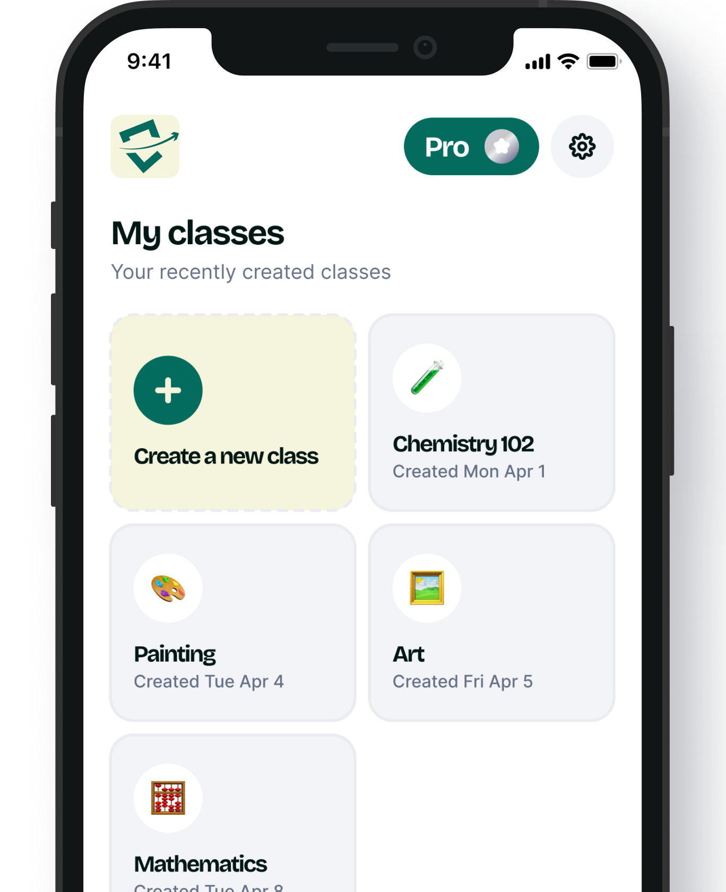
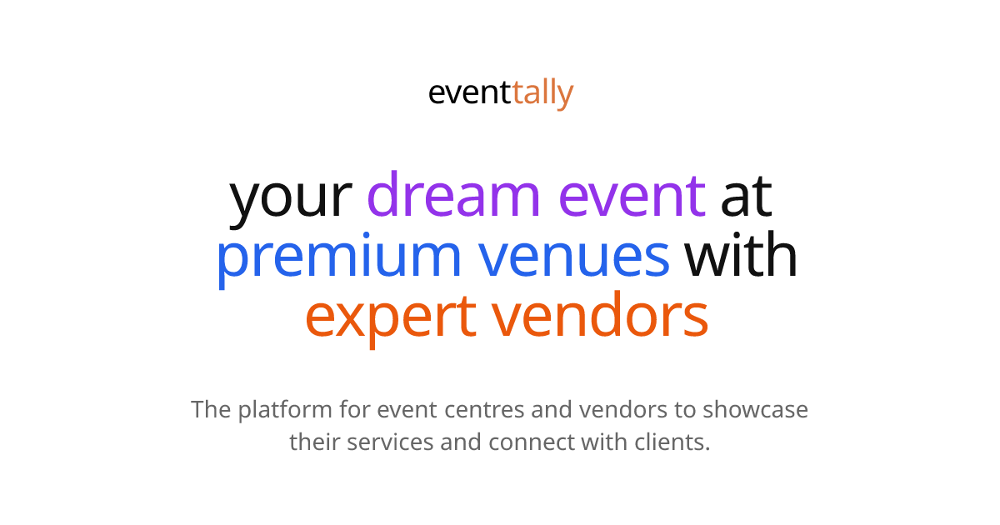
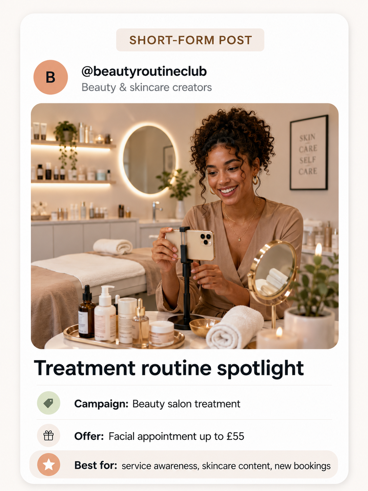

Open product ↗ExamCompanion
Turn source material into study content, practice it, and see where more learning is needed.
Visit examcompanion.comBackend / DevOps / AI
I help product teams build, ship, and run software that survives real users, real traffic, and real change.
I love networking and operations because they show how software really behaves: dependencies, traffic, failure, recovery, and change.
The offer
Backend engineering with a DevOps mindset: fewer handoffs, clearer delivery, and systems your team can operate after launch.
Built with teams.
Measured in outcomes.
Build it. Run it.
Learn from it.
Selected product work
Products across learning, events, and creator marketing. I worked on the backend, integrations, infrastructure, and delivery.
View all projects
Open product ↗Turn source material into study content, practice it, and see where more learning is needed.
Visit examcompanion.com
Open product ↗Event, vendor, ticket, payment, and collaborator workflows connected by a Go backend.
Visit eventtally.com
Open product ↗A managed local creator-campaign product with a Supabase backend and clear operational flows.
Visit poplocal.coWhy teams need this
Products lose time when releases are slow, failures are hard to see, and no one owns the path to production. I work on that path.
When every release needs a manual handoff, product teams wait longer to learn from users and fix what is wrong.
What I addA repeatable path from commit to deploy: CI/CD, containers, checks, and smaller changes.When logs, metrics, health checks, and ownership are missing, a small issue takes too long to find and recover from.
What I addVisibility into services and infrastructure, with clear failure states and recovery paths.As users and services grow, undocumented environments and one-off changes make every new release riskier.
What I addInfrastructure and configuration expressed as code, with boundaries teams can understand and repeat.Development and operations work better when the people building a service understand how it runs and what users experience.
What I addA backend engineer who stays close to the product, the network, the deployment, and the outcome.Current series
I am building small Docker topologies to learn network configuration, segmentation, routing, and service communication. This is the current state of k8-test-project/dockerfile.networklab.yaml.
Two external-facing bridge networks.
Two internal-only bridge networks.
Two internal-only bridge networks.
The networks are intentionally separate. The next iteration is about designing the routing between them.
How I work
A practical approach shaped by product work and continuous infrastructure learning.
Understand what a person needs to do, then model the data and services that make that flow dependable.
From Stripe webhooks to AI generation, connect outside systems with explicit boundaries and useful failure states.
Health checks, metrics, migrations, containers, and clear documentation are part of the feature, not an afterthought.
Next build